第一章 了解游戏模式
1.3 多人遊戲

在主菜单选择多人进入后，这里会有1.3.1 互联网游戏、死亡竞赛、竞技战役（征服美洲-反击 1.50 版独有）和历史战役（征服美洲 1.46 版独有）几种玩法。点击你想要玩的任意一种模式，或点击返回，可以返回主菜单。
1.3.1 互联网游戏
互联网模式游戏是由官方提供的服务器进行联机的模式，只有购买正版的玩家才可以进行。在互联网游戏里，玩家可以与世界各地其他玩家对战、进行官方比赛、进行比分排名、与其他玩家组成团队、查看官方新闻等等。
目前，GSC公司已不再维护该服务器，购买正版的玩家只能登入互联网游戏界面，而无法进行联网游戏，因此本站不再详细介绍该版块。
1.3.2 死亡竞赛
如果想要和朋友自定义一局游戏，可以通过死亡竞赛模式来达到。玩家可以通过局域网、人造网际网路（对战平台）或直接通过 IP 联网，可以在游戏里创建房间或加入别人的房间。和单人游戏里的随机地图一样，可以设置几乎所有的原始参数（地图类型、地图大小、难易程度、初始资源等等），来开始一场你喜欢的游戏。地图也是随机形成的。
最多可以支持7名玩家通过IPX或ICP/IP协议加入同一场游戏。要开始一场自定义死亡竞赛，多名玩家应通过IPX或ICP/IP协议加入到同一网络。此时需要一名玩家创建一个游戏房间（主机），而其他玩家加入这个房间。最好是电脑性能与网络状态较好的玩家作为主机。
进入死亡竞赛
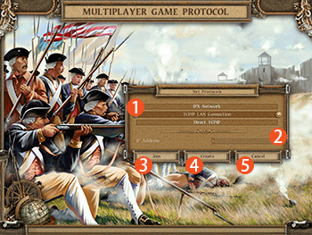
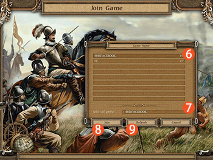
① 从 IPX Network、TCP/IP LAN Connection 和 Direct TCP/IP 中选择一个联网模式；
② 如果选择了 Direct TCP/IP 模式并且想要加入别人的游戏房间，需要在此输入他人的IP地址；
③ 点击“Join”按钮可以进入游戏房间列表界面；
④ 点击“Creat”可以在当前网络情况下建立一个游戏房间；
⑤ 点击“Cancel”返回上个界面；
⑥ 这里会显示当前网络下别人建立的游戏房间列表（包括房间人数），玩家可以选择任何一个加入；
⑦ 玩家选择的游戏房间名称会显示在这里；
⑧ 选择一个游戏房间，点击“Join”即可加入进去；
⑨ 点击“Refresh”可以刷新最新的游戏房间列表。
IPX Network、ICP/IP LAN Connection 和 Direct TCP/IP 是三种不同的网络协议：
IPX Network 互联网分组交换协议
互联网分组交换协议（Internetwork Packet Exchange，IPX）是由Novell公司提出的运行于OSI模型第三层的协议，标准为RFC 1132。具有可路由的特性。IPX的地址分为网络地址和主机地址，网络地址由管理员分配，主机地址为MAC地址。由于IP协议的广泛使用，IPX的应用逐渐减少。
TCP/IP LAN Connection TCP/IP协议局域网连接
通过TCP/IP协议进行局域网（自建）内的连接。通过实现用来将虚拟以太网连接至外部 LAN 的 TCP/IP 技术，可使 IP 信息包能够继续到达外部接口并向它们的目标前进。标准 TCP/IP 路由用来通过与您定义路由至任何其他 LAN 的相同方法来将通信数据路由至虚拟以太网网络。这将需要通过网络更新路由信息。
Direct TCP/IP 直接 TCP/IP 连接
網際網路協定套組（Internet Protocol Suite，縮寫IPS）一個網路通訊模型，以及一整個網路傳輸協定家族，為網際網路的基礎通訊架構。它常被通稱為TCP/IP協定族（TCP/IP Protocol Suite，或TCP/IP Protocols），簡稱TCP/IP。
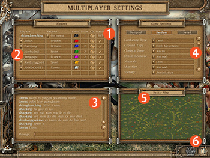
死亡竞赛模式操作
① 第一行通常显示的是你的国家参数，你可以在此选择国家、颜色、和队伍。如果你是房间建立者，请注意“Status”一项，你要等到所有玩家都准备好了之后，“Status”进度到100%才可以开始这场游戏；
② 其他玩家选择的国家、颜色、组队等参数，房主也可以操作加入电脑玩家。当玩家准备好时，他们的“Status”一项会显示一个钩。“CD”选项表示玩家的游戏版本，版本不同，无法联机；
③ 这里可以允许玩家们在房间内聊天；
④ 房主可以选择游戏开始的参数，包括地图类型、地图大小、难易程度、初始资源等等。滚动右边的滚动条可以查看完整选项；
⑤ 这里会显示这个游戏的地图可能的形式；
⑥ 如果这是你加入的房间，当你准备好了，请点击“开始/准备”按钮。如果你是房主，当所有玩家准备好之后，“开始/准备”就会又灰色变成彩色，你可以点击来开始这场游戏。
在选择国家、阵营列表中，若多名玩家选择同一种颜色，那么这多名玩家会同时操作游戏里的同一方，与一个单个玩家操作的一方一样，只能操作一个国家。

|
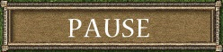
|
当多人选择同一队伍的时候，可以通过 M 菜单打开设定栏，或也可以通过 Ctrl+O 快捷按键打开，玩家可以在设定栏切换想控制的颜色。
多人游戏链接的稳定性
通过局域网或互联网进行多人游戏，有时候可能会出现连接速度突然变慢、卡顿或连接中断的情况。当网络出现问题或故障的时候，都有可能会出现。为防止游戏中断，可以开启自动保存模式。或者玩家也可以在中途自己手动保存游戏进程，在游戏中按F12按钮，即可弹出菜单，点击“保存”并自定义一个名称，即可保存该进度。
要读取一个保存的游戏，需要有与被保存的游戏相同数量的参与者加入。玩家的颜色必须要与游戏中的颜色一样，即可继续游戏。
网络延迟或游戏奔溃
人为停止行为
暂停行为
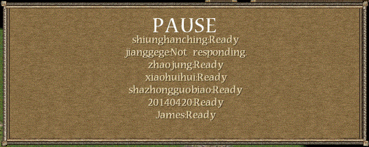
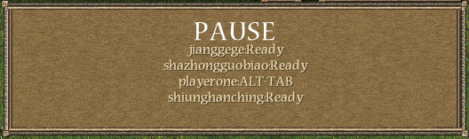
有玩家发生网络延迟或加载缓慢的情况，会在弹出框显示该玩家 Loading；若有玩家游戏程序奔溃，或其他电脑故障导致无法联机，则会显示该玩家 Not Rsoponding
有玩家通过ALT+TAB快捷键切换到游戏以外的界面，则会弹出框内显示该玩家 ALT TAB；若玩家在查询菜单，则弹出框显示该玩家 Look The Menu
若有玩家暂停游戏，其他玩家也会暂停，游戏中间会显示 PAUSE 暂停框
在联网游戏中，游戏的速度一般会根据网络环境来决定。同时玩家电脑的CUP也会影响游戏速度，若一名玩家电脑性能较差，那么他的游戏速度会降低，其他联网玩家的游戏界面就会因为要等待这名玩家而出现卡顿。如果网络延迟严重，则可能会出现无法同步的现象，则游戏画面左下角会闪烁“游戏无法同步”的字样。
1.3.3 联网竞技战役
联网竞技战役是 征服美洲-反击 1.50 独有的多人战斗模式。支持两名玩家联网对战。战役的地图来自竞技战役的10张地图，每一名玩家可以选择一种颜色，使用战役地图中创建好的军队进行战斗。
与死亡竞赛模式一样，要开始一场自定义联网竞技战役，2名玩家应通过 IPX Network、TCP/IP LAN Connection 或 Direct TCP/IP 协议中加入到同一网络。此时需要一名玩家创建一个游戏房间（主机），而另一名玩家加入这个房间。最好是电脑性能与网络状态较好的玩家作为主机。具体的加入步骤请参考考
1.3.2 死亡竞赛 章节中的介绍。
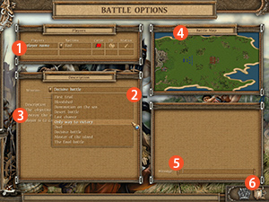
联网竞技战役模式操作
① 这里显示两个玩家的名称和选择的颜色（不同阵营）。如果你是房间建立者，请注意“Status”一项，你要等到所有玩家都准备好了之后，“Status”进度到100%才可以开始这场游戏；
② 点击任务清单可以从竞技战役中选择一个关卡，关于关卡，可以参看本站
戰役、任務簡介 板块；
③ 关于选择的关卡的介绍；
④ 这个关卡的地图，与兵力部署情况；
⑤ 这里可以允许玩家们在房间内聊天；
⑥ 如果这是你加入的房间，当你准备好了，请点击“开始/准备”按钮。如果你是房主，当所有玩家准备好之后，“开始/准备”就会又灰色变成彩色，你可以点击来开始这场游戏。
|
|
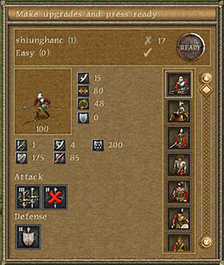
|
当联网竞技战役开始的时候，你有30秒的时间查看双方的兵力、升级军事单位的属性和进行预先指派操作，这些信息和操作界面会在右上角显示出来，如右图所示。
玩家可以点击操作框内的图标进行查看和操作，如果操作完成，可以点击“READY”按钮开始这场战役。双方都准备好后，系统会缓冲几秒钟，然后就开始游戏。
1.3.4 历史战役
历史战役是 征服美洲 1.46 原版中独有的多人战斗模式。支持两名玩家联网对战。在这里，你可以重现历史上那些经典战役的辉煌。地形、位置、部队和力量对比等等都按照历史进行了重现。在战役开始前，你可以观看这场战役的有关历史。历史战役与联网竞技战役类似，玩家不需要发展经济，只需要朝对手发起攻击，击败敌人。地图中会设置好需要的军队。
与死亡竞赛模式和联网竞技战役一样，要开始一场自定义历史战役，2名玩家应通过 IPX Network、TCP/IP LAN Connection 或 Direct TCP/IP 协议中加入到同一网络。此时需要一名玩家创建一个游戏房间（主机），而另一名玩家加入这个房间。最好是电脑性能与网络状态较好的玩家作为主机。具体的加入步骤请参考
1.3.2 死亡竞赛 章节中的介绍。
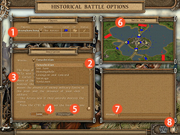
历史战役模式操作
① 这里显示两个玩家的名称和选择的颜色（不同阵营）。如果你是房间建立者，请注意“Status”一项，你要等到所有玩家都准备好了之后，“Status”进度到100%才可以开始这场游戏；
② 点击战役清单，可以从6个历史战役中选择一个；
③ 这个战役的介绍与历史背景将显示在这里；
④ 点击这里的“Game”按钮，会提示这个战役的兵力情况与胜利目标；
⑤ 点击这里的“Historical”按钮，会介绍这场历时战役的历史背景；
⑥ 这个关卡的地图，与兵力部署情况；
⑦ 这里可以允许玩家们在房间内聊天；
⑧ 如果这是你加入的房间，当你准备好了，请点击“开始/准备”按钮。如果你是房主，当所有玩家准备好之后，“开始/准备”就会又灰色变成彩色，你可以点击来开始这场游戏。
一共有6个历史战役,点击下面的战役标题可以展开战役详情：
西班牙征服者科尔特斯（红色）的部队必须占领地图中五个指定位置中的三个，或完全消灭阿兹特克军队（蓝色）。 “占领”是指该地区没有敌方的军事力量，有自己士兵存在。如果阿兹特克消灭了科尔特兹的部队，那么阿兹特克将胜利。
按住CTRL键查看需要占领的位置
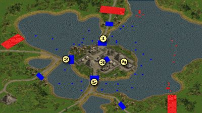
为了赢得这场战斗，印加军队（红色）必须占领5个指定位置中的3个，或者完全消灭西班牙征服者皮萨罗（蓝色）的军队。 “占领”是指该地区没有敌方的军事力量，有自己士兵存在。如果西班牙消灭了地均的部队，那么西班牙将胜利。
按住CTRL键查看需要占领的位置
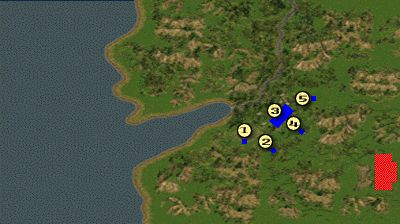
为了赢得这场战斗，英国布拉多克将军的军队（红色）必须占领5个指定位置中的3个，或者完全消灭法军（蓝色）。 “占领”是指该地区没有敌方的军事力量，有自己士兵存在。如果法军消灭了英军，那么法国将胜利。
按住CTRL键查看需要占领的位置
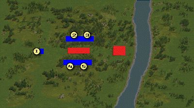
为了赢得这场战斗，英国军队（红色）必须占领5个指定位置中的3个，或者完全消灭美军（蓝色）。 “占领”是指该地区没有敌方的军事力量，有自己士兵存在。如果美军消灭了英军，那么美国将胜利。
按住CTRL键查看需要占领的位置
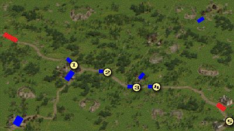
为了赢得这场战斗，美国军队（红色）必须占领5个指定位置中的3个，或者完全消灭英军（蓝色）。 “占领”是指该地区没有敌方的军事力量，有自己士兵存在。如果英军消灭了美军，那么英国将胜利。
按住CTRL键查看需要占领的位置
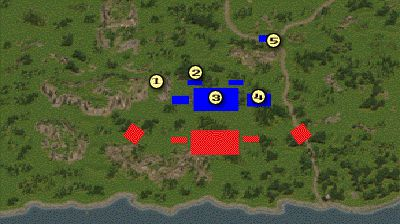
为了赢得这场战斗，美国军队（红色）必须占领5个指定位置中的3个，或者完全消灭英军（蓝色）。 “占领”是指该地区没有敌方的军事力量，有自己士兵存在。如果英军消灭了美军，那么英国将胜利。
按住CTRL键查看需要占领的位置
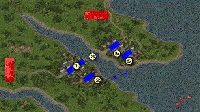